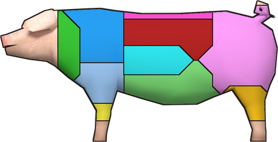
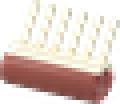
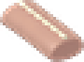
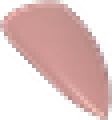
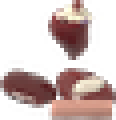

Chuck
Rib
Short
Chuck
Rib
Shortloin Sirloin Round Brisket Plate Flank Tenderloin
primal cuts, plus offal, fat, scraps and cleaned intestines
No more one-click meat. Pick a primal on the carcass diagram, trace the cut with your own hand, and every piece comes out with a hidden grade.
Trace every cut
Your hand on the knife decides how good the meat is.
Hook and bleed
cows, pigs, sheep and deer hang on a butcher hook
Skin or pluck
until then the body is one target

Pick a primal
on the carcass diagram

Trace it
green marker to red marker
 start
end
clean band
the knife drifts
start
end
clean band
the knife drifts
The right tool for each primal


Knife
brisket, plate, flank, round, sirloin and tenderloin


Saw
shanks, rib and short loin, through the bone

Cleaver or hatchet
the chuck. Cow tools shown; each animal has its own
Every cut gets a grade
A hidden score from 0 to 100 that follows the meat everywhere.
What a better grade gets you
meat kept from the primal
the rest goes to scraps
food values
poor cuts spoil sooner too
Butchering XP
clean cuts level you faster
Seven animals, real yields
Meat from a full-size animal at grade 100. Offal, fat and scraps come on top.
cow
pig
deer
sheep
turkey
chicken
rabbit

Beef short loin

Pork belly

Mutton rack

Venison backstrap
Turkey breasts

Rabbit saddle

Heart

Liver

Tongue

Giblets

Intestines

Fat
Big game comes home in quarters
Dress it where it fell, then haul it without bruising the meat.

Field dress
with a knife, on the ground. The offal comes out and the carcass keeps twice as long


Quarter
with a saw: two forequarters, two hindquarters, and the hide

Butcher at home
right-click a quarter to cut its half of each primal


Loose
by hand, in a bag or in a car while you move, up to -10

Butcher's Hand Sled
drag it behind you, and the meat spoils at 75% speed

Game Cart
a rack trailer any vehicle can tow, with 4 hooks for quarters
Edge, aging and weather
Keep your blade sharp, age the best cuts and use the cold.
Butcher's edge
Every cut dulls it a little, hard cuts more. Hone it on a whetstone: your Maintenance skill sets how sharp it comes back.
Dry-age
up to +8 for a Choice or Prime cut kept in a fridge, then trimmed. It loses 1.5% weight a day. Frozen does not count.
Cold keeps meat
Carcasses and quarters spoil by the temperature where they lie. A deer hung outside in winter keeps for days.
Nothing goes to waste
Cure, render and grind the rest. The grade carries over.

Cured bacon
pork belly and salt


Cured ham
pork ham and salt

Jerky
a beef, mutton or venison cut and salt give 4

Sausages
3 mince, cleaned intestines and salt give 9


Tallow
render suet in a pot on any heat, strain 3 tallow


Lard
render pork fat for 3 lard and 2 cracklings
Candles and soap
tallow or lard makes 2 candles or 2 lye soap

Bone meal
ground bones, then blood and bone fertilizer

With Dazed Cooking: Make Jerky gives Salted Meat Strips that dry into jerky in 2 days on a drying rack, faster in a food dehydrator, or in Dazed Plumbing's smoker.

Four primal guides
Beef, pork, lamb and game magazines steady your knife on their animals.
Curing and Smoking Quarterly
Teaches bacon, ham, sausages and jerky (or reach Cooking 6).
Butcher's Log
Counts your cuts, Prime cuts, overcuts and best grade per animal.
Works with Dazed Climate's room temperatures and Dazed Cooking's cut-by-cut cooking. Rats, raccoons and other mods' animals keep vanilla butchering.